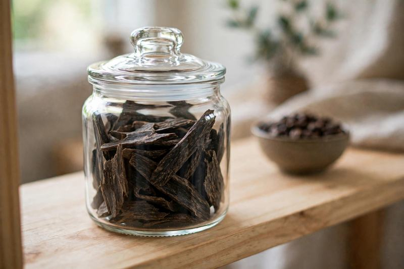

闻一闻，串进来的味道是什么：香水味、樟脑味、烟味、霉味，还是其他沉香的味道。不同的串味，处理方法不一样。
轻微串味：本味还在，杂味淡淡的。严重串味：本味被盖住，杂味很明显。先判断轻重，再决定怎么处理。
立刻把串味的沉香单独拿出来，放在干净的密封罐里，和其他沉香分开。不要继续和串味源放在一起，越放串得越深。
同时检查其他沉香：有没有也被串味。串味会传染，一块串味的料放在罐子里，整罐都会受影响。
轻微串味，放在阴凉通风处，每天打开罐子透透气，杂味会慢慢散掉。这个过程要几天到几周，别着急。
通风的时候不要晒太阳，不要放在风口吹。阴凉、通风、干燥，三个条件都要满足。
严重串味可以试试低温熏蒸：电熏炉调到最低温度，放一小块料，低温加热几分钟，让杂味先挥发掉。温度别高，高了会把本味也烧掉。
如果串味源是霉味，要先检查有没有发霉。发霉的料要单独处理，霉斑擦掉、阴干，再按上面的方法散味。霉得很严重的料，香韵已经坏了，救回来的意义不大。
能。串味的预防比处理容易：单独存放、密封罐、远离气味重的东西，做到这三点，基本不会串味。
新买的沉香到家，先闻一闻有没有串味。运输过程中和香水、樟脑放一起，也会串味。发现串味，越早处理越好，串得越深越难散。
不能用水洗：沉香沾水会发霉、变味，越洗越糟。不能用酒精擦：酒精会溶解油脂，香味直接没了。不能暴晒：阳光会让香气成分变质。
也不能用香水、精油去盖：杂味加杂味，最后什么味都不是。串味只能靠散，不能靠盖。
| 串味程度 | 表现 | 处理方法 |
|---|---|---|
| 轻微 | 本味还在，杂味淡淡的 | 隔离 + 通风散味，几天到几周 |
| 严重 | 本味被盖住，杂味明显 | 隔离 + 通风 + 低温熏蒸 |
| 发霉 | 有霉斑、霉味 | 先除霉阴干，再散味 |